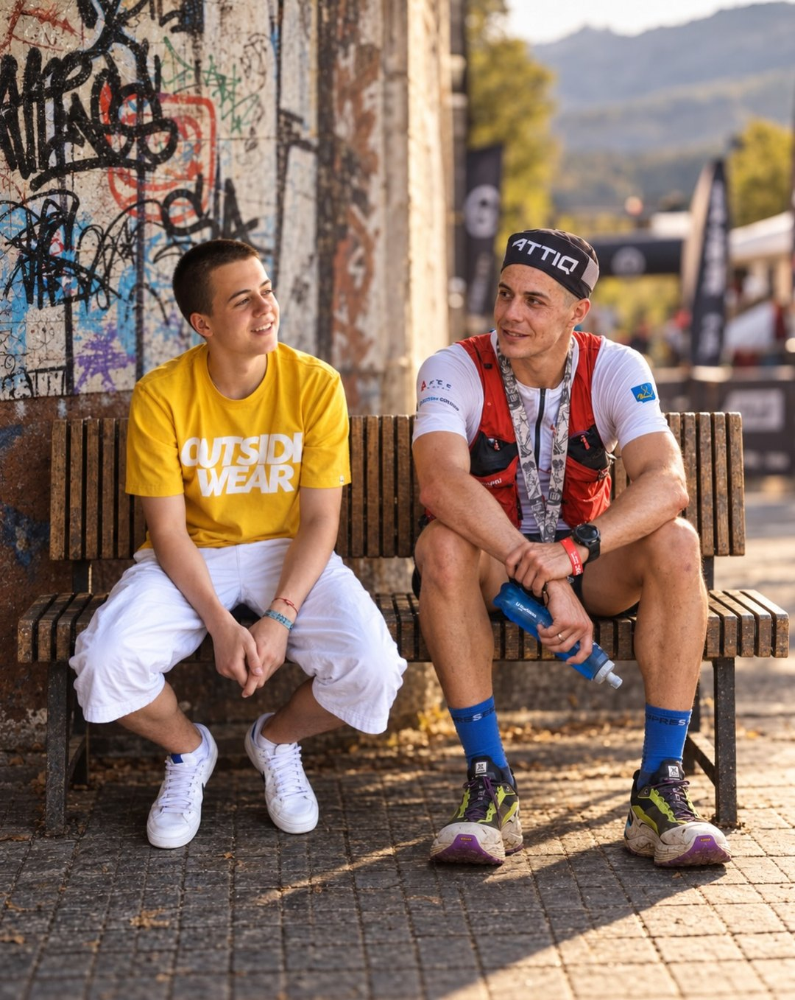
Potęga Pasji
O zmianie, odwadze i odzyskiwaniu wiary w siebie.
Osobista opowieść o wyjściu z uzależnień i nowym życiu zbudowanym na pasji.
Dla organizatorów wydarzeń, firm i szkół, z przekazem dopasowanym do odbiorców.

Andrzej Kowalczyk, sportowiec ultraekstremalny i prelegent
Pokonuję setki kilometrów, podejmuję pionierskie próby i łączę sport z pomocą innym. Z markami tworzę angażujące projekty, a podczas prelekcji dzielę się doświadczeniem wytrwałości i życiowej przemiany.
2025
65 h 600 km
Pierwszy w historii pokonałem podwójną wersję najtrudniejszego triathlonu w Europie.
2025
86 h 450 km
Przebiegłem Główny Szlak Sudecki z trzecim najlepszym czasem w historii.
2026
72 h 482 km
72 pętle biegiem wokół jeziora, w ramach Backyard Challenge dla hospicjum.
Sześciokrotny medalista Mistrzostw Świata w ekstremalnym lodowym pływaniu. Członek kadry narodowej. Zwycięzca dwunasto- i dwudziestoczterogodzinnych maratonów pływackich. Medalista etapowych górskich biegów. Rekordzista górskich szlaków długodystansowych. Elitarny biegacz górski.
5099 km przebiegniętych w sezonie 2025/2026
ITRA Performance Index 844 Elite 4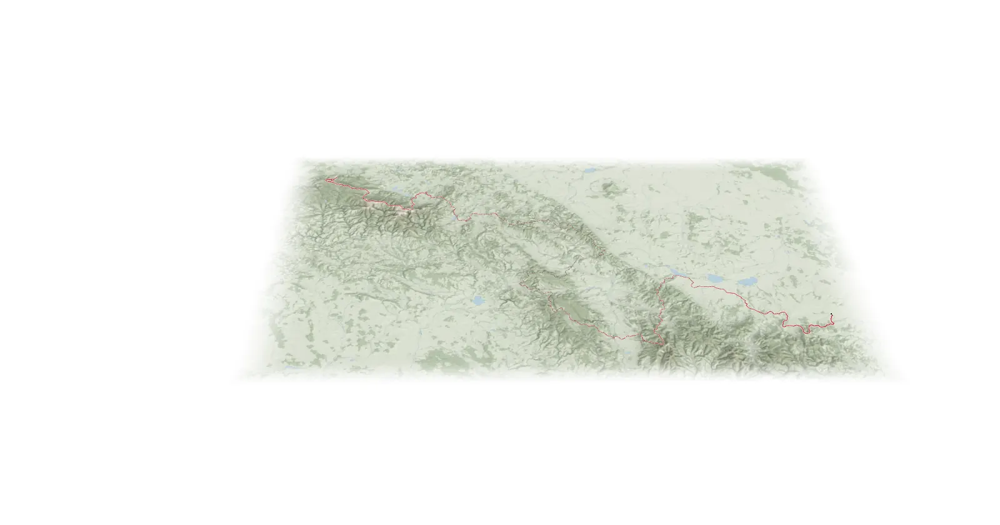
© OpenStreetMap · Mapzen Terrain
© OpenStreetMap · Natural Earth
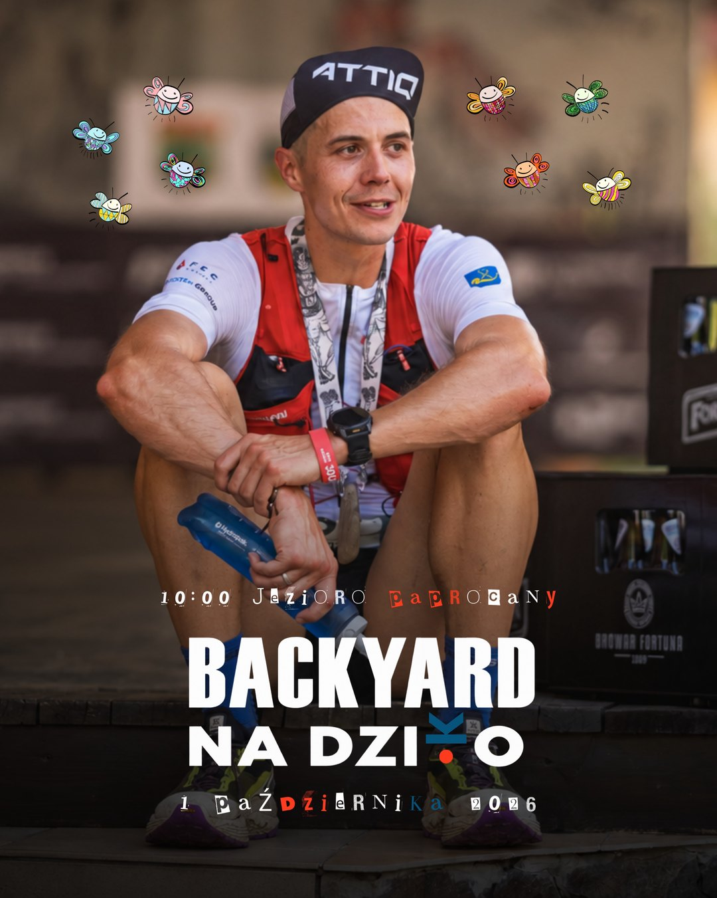
Backyard na Dziko 2026 270 235 zł W kółko dla Kwadratu 2026 80 985 zł
W kółko dla Kwadratu 2026 80 985 zł Przebiec góry dla Nikusi 2025 35 231 zł
Przebiec góry dla Nikusi 2025 35 231 zł 2Hard 2025 93 160 zł
2Hard 2025 93 160 zł134publikacje w mediach tradycyjnych w latach 2022–2025
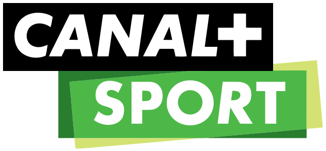
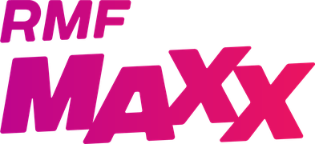
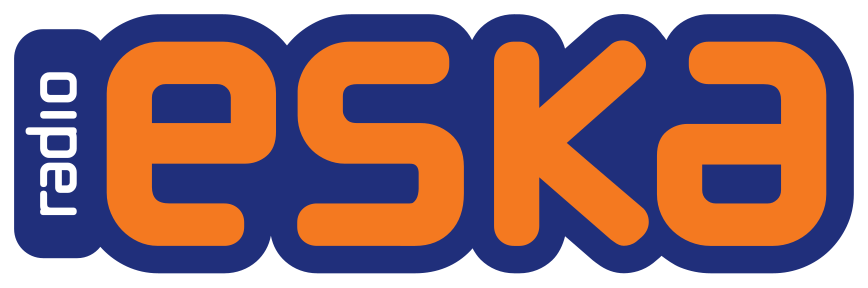
Wspierają mnie
Odważne wyzwania przyciągają uwagę. Wspólne działania pozwalają zamienić ją w rozpoznawalność marki, zaangażowanie ludzi i realną pomoc. Na swoich Partnerów przenoszę wizerunek odwagi, ambicji, zaangażowania, autentyczności, skuteczności, determinacji i odpowiedzialności społecznej.
Zakres współpracy dopasujemy indywidualnie do celów Twojej firmy.
Opowiadam o drodze od uzależnień do sportu zawodowego, o podejmowaniu zmian i konsekwencji wtedy, gdy początkowy zapał już mija. Prowadzę spotkania dla firm, szkół, instytucji i uczestników festiwali.

O zmianie, odwadze i odzyskiwaniu wiary w siebie.
Osobista opowieść o wyjściu z uzależnień i nowym życiu zbudowanym na pasji.
Dla organizatorów wydarzeń, firm i szkół, z przekazem dopasowanym do odbiorców.
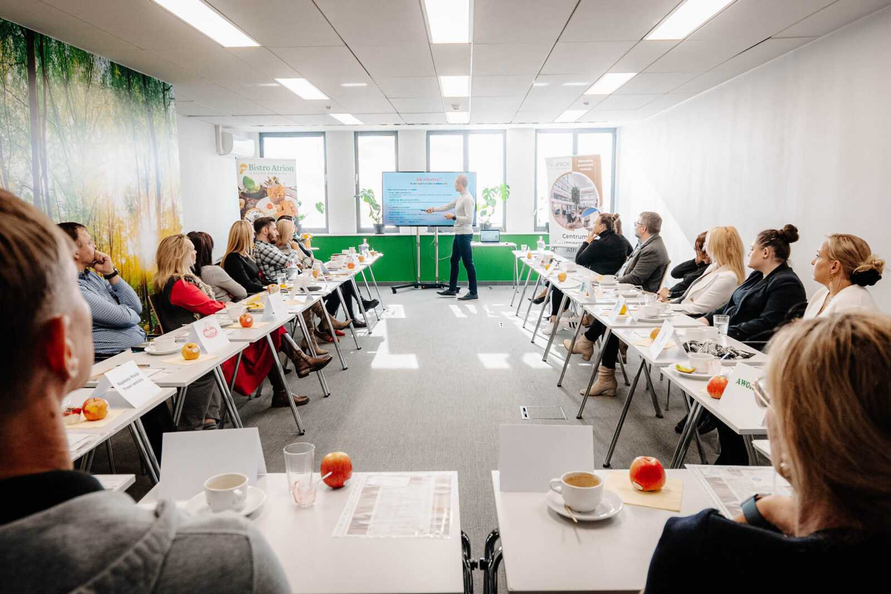
Praktyczne szkolenie dla zespołów.
Jak zadbać o sen, ruch, odżywianie i regenerację w codziennym życiu? Przystępna wiedza, rozmowa i warsztaty pomagające zaplanować konkretne zmiany.
Dla firm, które chcą wspierać zdrowe nawyki pracowników.
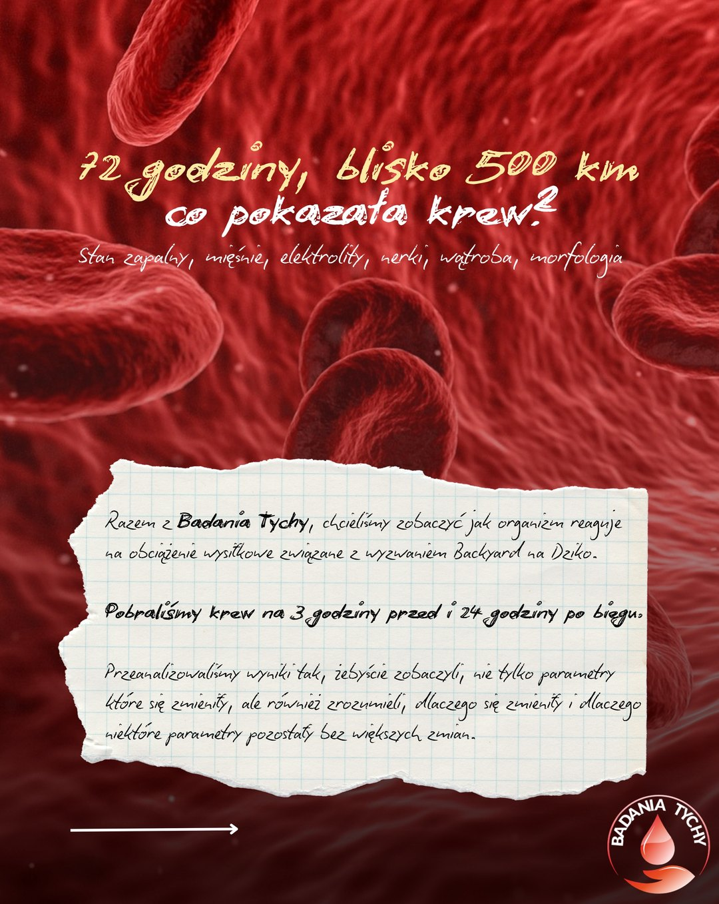
Przed 72 godzinnym biegiem nad jeziorem Paprocany, skontaktowała się ze mną ekipa Badania Tychy z propozycją, która brzmiała.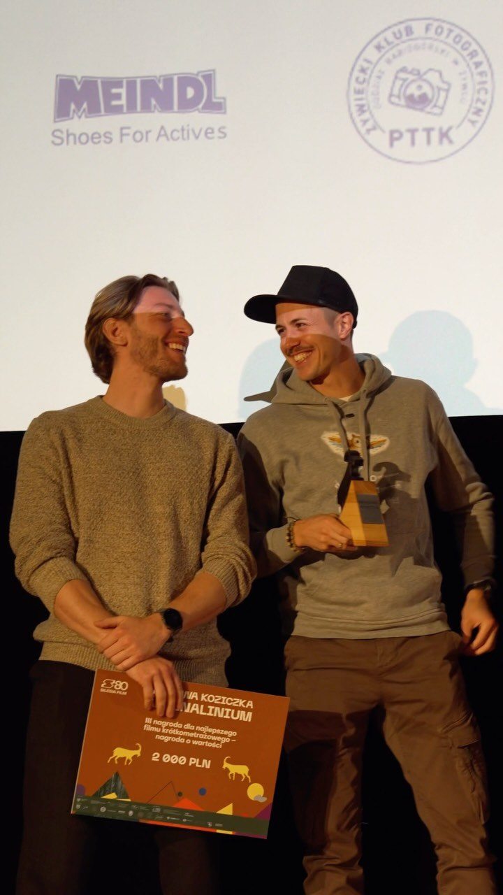
Wczoraj podczas XIX edycji festiwal_adrenalinium w Żywcu, film 2 Hard Road 2 Walk Alone, znalazł się w gronie laureatów, otrzymując III nagrodę - brązową kozice - w konkursie filmów…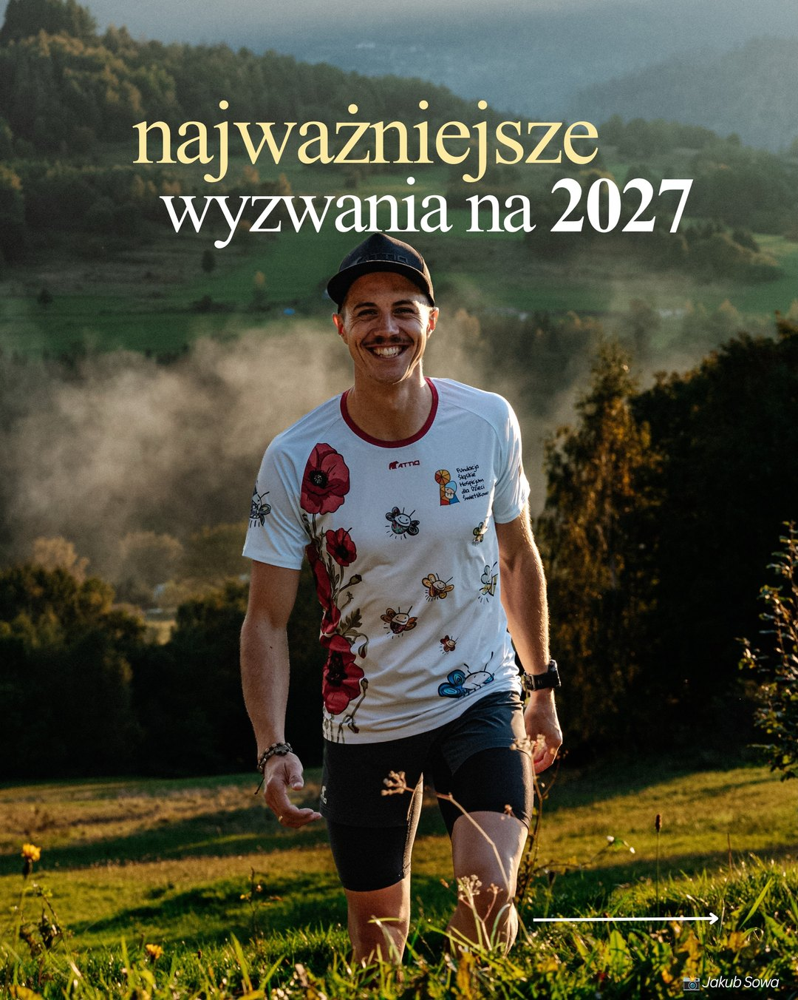
Przedstawiam plany na 2027 rok i miejmy to z głowy Mimo doświadczenia, które zgromadziłem, gdy patrzę na to wszystko - ogarnia mnie maleńkość.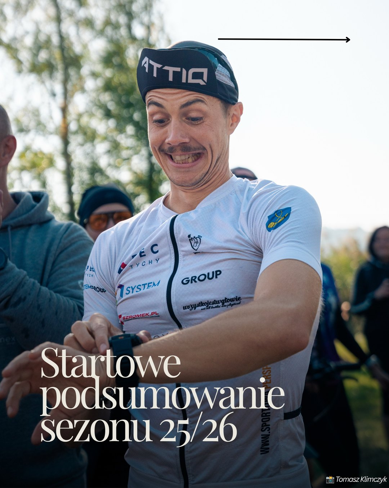
Zanim rozpocznie się nowy sezon i przyjdzie ogłosić nowe cele, trzeba podsumować ten świeżo zakończony. Tym bardziej, że był wspaniały. Wręcz wyjątkowy.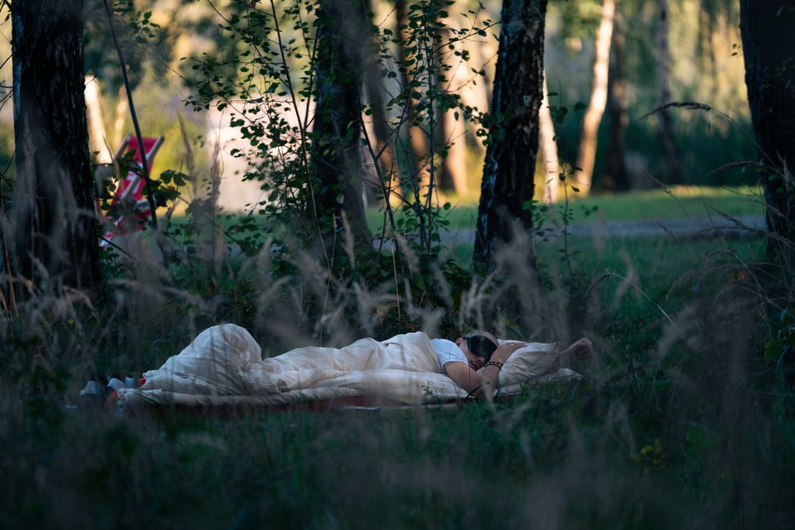
5099 km przebiegniętych w sezonie 2025/2026. W analogicznym okresie poprzedniego sezonu było ich 4393 km i wtedy był to absolutny rekord - pierwszy raz wybiegałem wówczas ponad 4000 km w…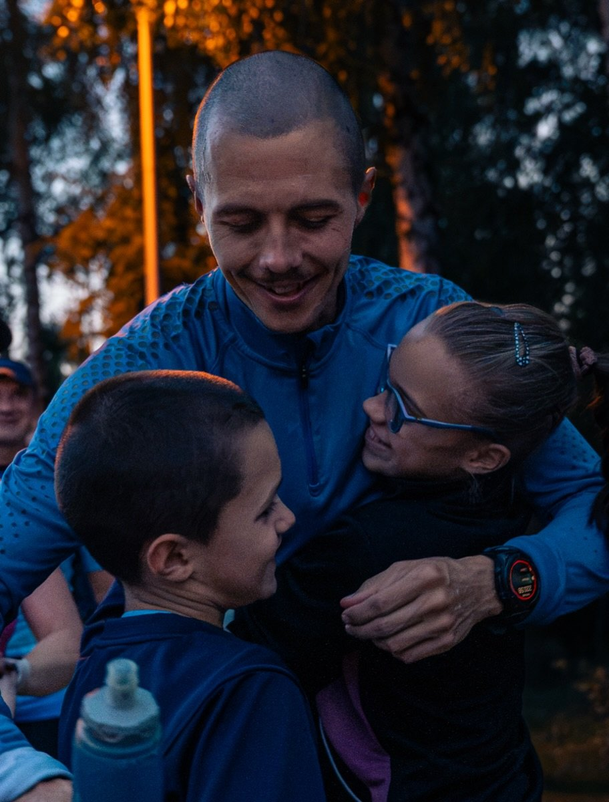
Dwa tygodnie roztrenowania za mną, a tydzień z kawałkiem przede mną. Starzeje się.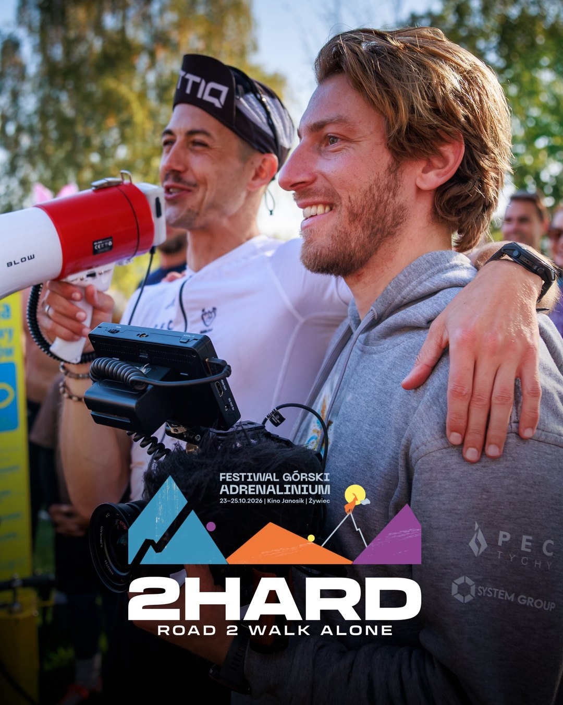
Film 2 Hard Road 2 Walk Alone, został zakwalifikowany do konkursu filmów krótkometrażowych, w ramach XIX edycji Festiwalu Górskiego Adrenalinium w Żywcu.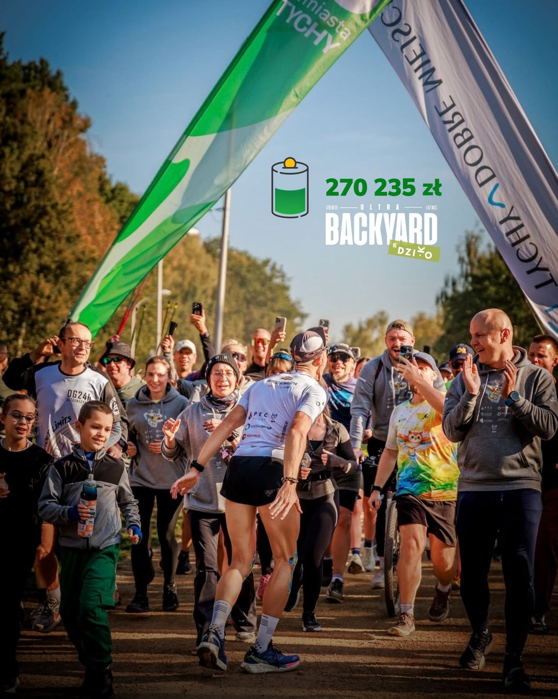
Tydzień temu o tej godzinie, pokonaliśmy ostatnią pętlę wokół jeziora Paprocany, dobijając do brzegu wyzwania i zaplanowanej liczby 72 pętli, 482 kilometrów biegu.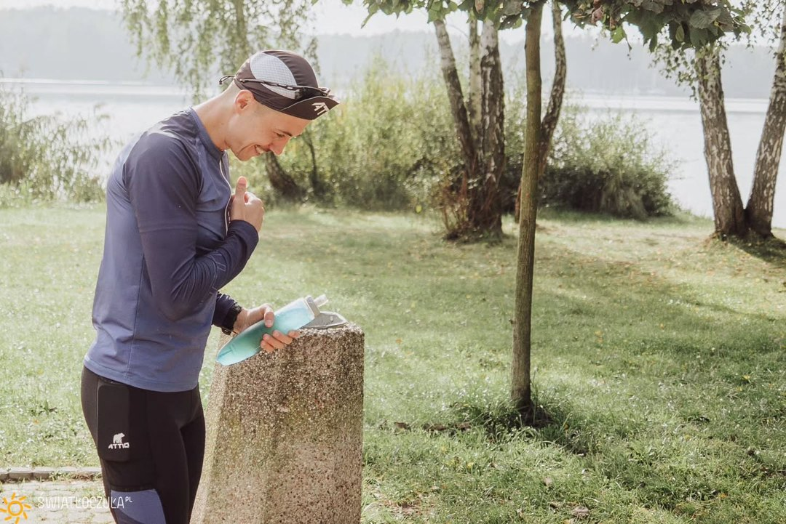
To było NIESAMOWITE! Te ponad 3 dni zlały się w jedno. Tona emocji, wzruszeń, zmęczenia. To był serial który pisało samo życie. Kilka momentów zostanie na zawsze w moim sercu i tak się…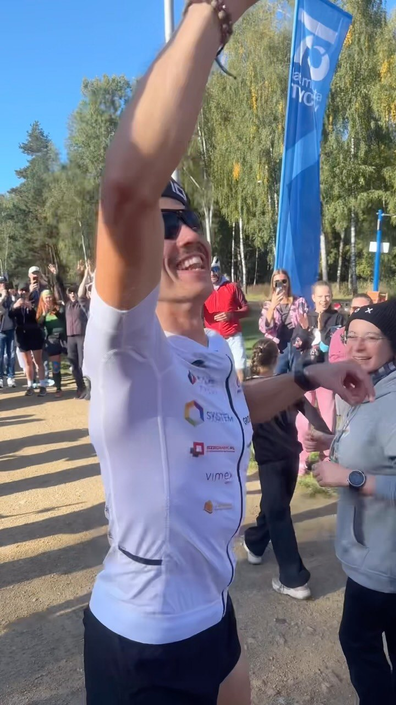
KONIEC. I chyba nadal nie do końca dociera do nas, co właśnie się wydarzyło.Szukasz partnera dla swojej marki lub prelegenta na wydarzenie? Napisz kilka słów o swoim pomyśle. Dopasujemy formę współpracy do Twoich potrzeb.